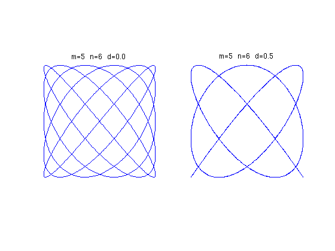
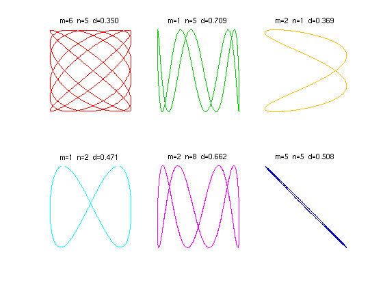
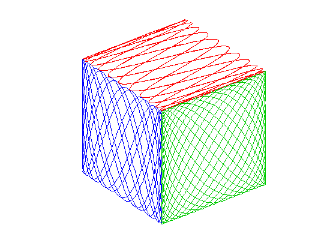

Lissajous curves
Nick Trefethen, October 2010
(Chebfun example geom/Lissajous.m)
Lissajous figures or Lissajous curves are the curves in the x-y plane obtained by taking x and y to vary sinusoidally with respect to a parameter t, typically with different frequencies. They are named after the 19th century French mathematician Jules Antoine Lissajous.
To keep things simple let's assume that the sine waves in both directions have amplitude 1 and the frequencies are both positive integers, hence rationally related. Then the Lissajous figure is a closed curve (i.e., 2pi-periodic with respect to t) that we can define by parameters m, n, and d.
x(t) = sin(mt), y(t) = sin(nt+d*pi).
For example, here are the cases m=5, n=6 with d=0 and d=1/2:
t = chebfun('t',[0 2*pi]); m = 5; n = 6; x = sin(m*t); y = sin(n*t); LW = 'Linewidth'; lw = 1.6; FS = 'fontsize'; subplot(1,2,1), plot(x,y,LW,lw) axis([-1 1 -1 1]), axis square off title(sprintf('m=%d n=%d d=%3.1f',m,n,0),FS,12) y = sin(n*t+pi/2); subplot(1,2,2), plot(x,y,LW,lw) title(sprintf('m=%d n=%d d=%3.1f',m,n,0.5),FS,12) axis([-1 1 -1 1]), axis square off
As usual with 2D computations, it's convenient to use complex arithmetic, defining
z(t) = x(t) + iy(t).
Here's an anonymous function that returns a Chebfun corresponding to parameters m,n,d:
lissajous = @(m,n,d) sin(m*t) + 1i*cos(n*t+pi*d);
Here are six Lissajous curves drawn at random:
clf rand('seed',1); colors = [1 0 0; 0 .8 0; 1 .75 0; 0 1 1; 1 0 1; 0 0 .75]; for np = 1:6 subplot(2,3,np) m = ceil(10*rand); n = ceil(10*rand); d = rand; plot(lissajous(m,n,d),LW,lw,'color',colors(np,:)) axis([-1 1 -1 1]), axis square off title(sprintf('m=%d n=%d d=%5.3f',m,n,d),FS,10) end
Just for fun, let's draw a cube in which each face is a different Lissajous figure:
clf f = lissajous(23,5,.5); plot3(real(f),imag(f),1+0*t,'r'), hold on f = lissajous(7,16,2/3); plot3(-1+0*t,real(f),imag(f),'b') f = lissajous(13,17,0); plot3(real(f),-1+0*t,imag(f),'color',[0 .8 0]) axis equal off